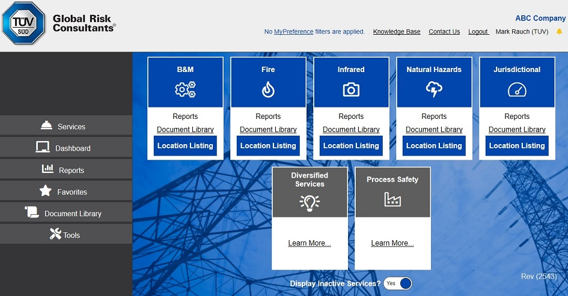

2021 October - TÜV SÜD GRC Connect Quarterly Update
New dashboards have been added to the Dashboards page.
The Recommendations area has been redesigned. It is easier to find the recommendation that you are looking for.
Text sizes have been increased for easier reading and updating.
A new set of colors and buttons has been introduced throughout the site.
2021 August - TÜV SÜD GRC Connect introduces the "Build-Your-Own" Dashboard
The "Build-Your-Own dashboard" gives you the ability to produce your own dashboards using the data that you provide and TÜV SÜD GRC collects on your behalf. While we strive to deliver the canned dashboards to provide for your risk management needs, TÜV SÜD GRC recognizes that every business is unique and you may have some data needs that are not covered in the dashboards that are provided in Connect. This new functionality delivers a blank slate for you to build your own visuals and data tables to answer the questions that we have not already answered for you. At this time we are providing access to data regarding your locations and their ratings, recommendations, and other values such as TIV and APL. More data will be made available for you to enhance your own dashboards. Please contact us and request specific information that you would like included that you do not see in this new platform.
2021 March - TÜV SÜD GRC Connect introduces Dashboards
Organizations require sufficient risk management measures to minimize their exposures and potential for losses. With increasing regulatory and insurance requirements,
it is more important than ever to have proper controls and measures in place. To do this, the proper identification, evaluation and development of mitigation options is a must for
companies looking to minimize their risk. We support you with high quality risk analysis and in-depth risk management programs to help you to reduce your property loss history and expectancy,
and ensure safety and reliability for the future.
The TÜV SÜD GRC Connect Dashboards provide clients with the business intelligence necessary to help meet these goals.
More detailed information about the individual dashboards can be found in the Connect Knowledge Base for Dashboards
The first dashboard being delivered is the Recommendations Dashboard.
2020 July - TÜV SÜD GRC Connect user interface redesigned
Much of the TÜV SÜD GRC Connect interface has been redesigned. For more information on the redesign, see the Knowledge Base. The link to the Knowledge Base can be found in the upper right-hand corner of the screen after logging in.
The Knowledge Base is not the only link that has moved or changed.
If you are having trouble finding other links, here is a table which shows how to find other pages that have moved:
| Old location | New location |
|---|---|
| Facility Navigation | The Services page has a Tile for each service |
| Charts & Reports... | All charts, reports, data mining, and extract links can now be found on the Reports page which is reached by the Reports menu item |
| Data Mining & Extracts ... | |
| User Tools | myBatch Reports Tool | Tools | Batch Reports |
| User Tools | myBatch Reports! | After you schedule Batch Reports, the output is viewed in the Batch Reports section of the Reports page |
| User Tools | myPreferences | Tools | My Preferences |
| User Tools | User Account Grid | Tools | User Accounts |
| User Tools | User Activity Log | Tools | User Activity |
| User Tools | Lat/Long Search | Tools | Latitude/Longitude Search |
| Quick Reference | Auto-Rec Response Summary | This summary can be found on the Reports page under the All category |
| Quick Reference | Program Status Summary | This summary can be found on the Reports page under the All category. Also, a new Dashboard menu item contains a shorter version of the Program Status Summary |
| Quick Reference | Fire Risk Improvement Chart | This chart can be found on the Reports page under the Fire category |
| Quick Reference | B&M Risk Improvement Chart | This chart can be found on the Reports page under the B&M category |
| Quick Reference | Process Safety Risk Improvement Chart | This chart can be found on the Reports page under the Process Safety category |
| Quick Reference | Client Information | File Cabinet menu item |
| Libraries | Recent Document Library Updates | The recent document library updates can be viewed by using the Document Library menu option. From this page, select the radio button for viewing recently uploaded documents. |
| Libraries | Document Library | Documents Library menu item |
| Libraries | Favorites Library | Favorites menu item |
| Libraries | What’s New! | Tools | What's New |
| Search Engine | Choose the Document Library menu option. From this page, select the Search button. |
| Map View | All Services | Facility Summary | This can be found on the Reports page |
| Map View | All Services | Inspection Status | This can be found on the Reports page |
| Map View ... | All other map views can be reached by clicking the Map View button on the associated grid found on the Reports Page |
| Project Management | Tools | Project Management |
| Facility Level Output Reports | Combined into a single “Facility Level Reports” menu item on the Location Details page. |
| Facility Level Data Extracts |
